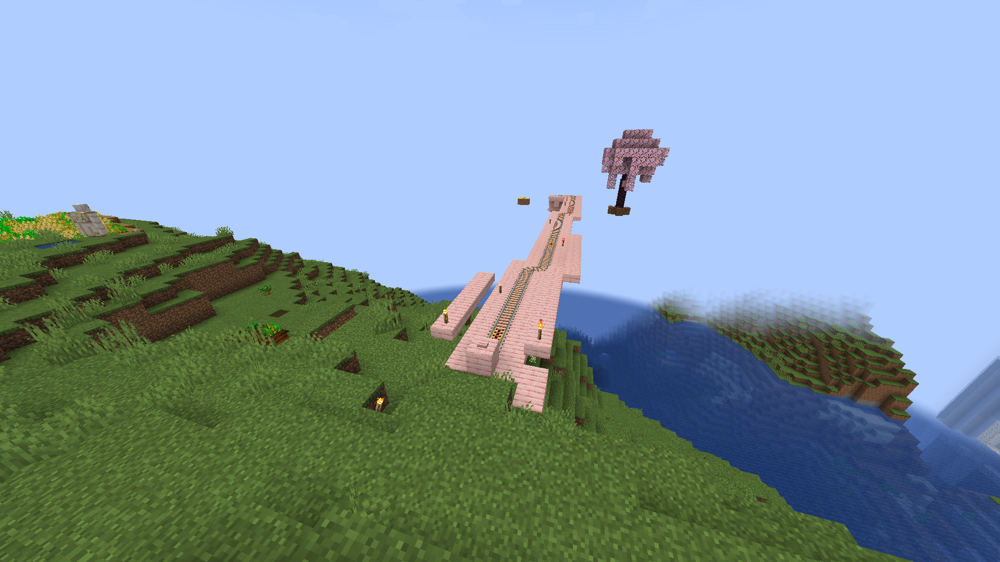
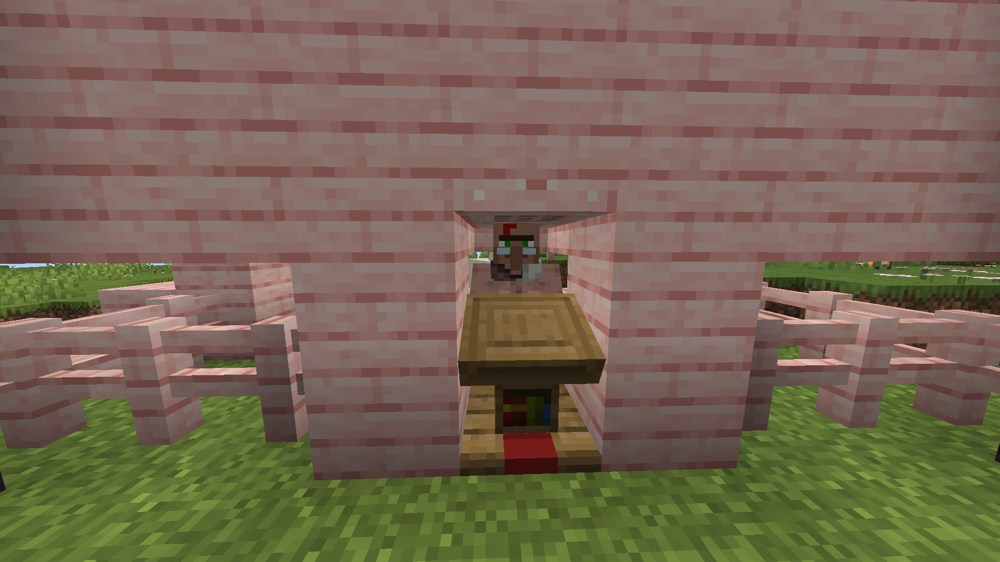

Home
History
Visit Us
The server is offline
Username:
(Server) Nationality:
Select...
Munareich
Coppereich
Heliasreich
Switzerland
Draconreich
Solvanreich
Other
Let's Go!
You're eligible to visit Cativille!

You'll need to pay 1 cow to visit cativille!
Thank you.

omg pls come <3
mrow, thanks for the chickens btw, was delicious